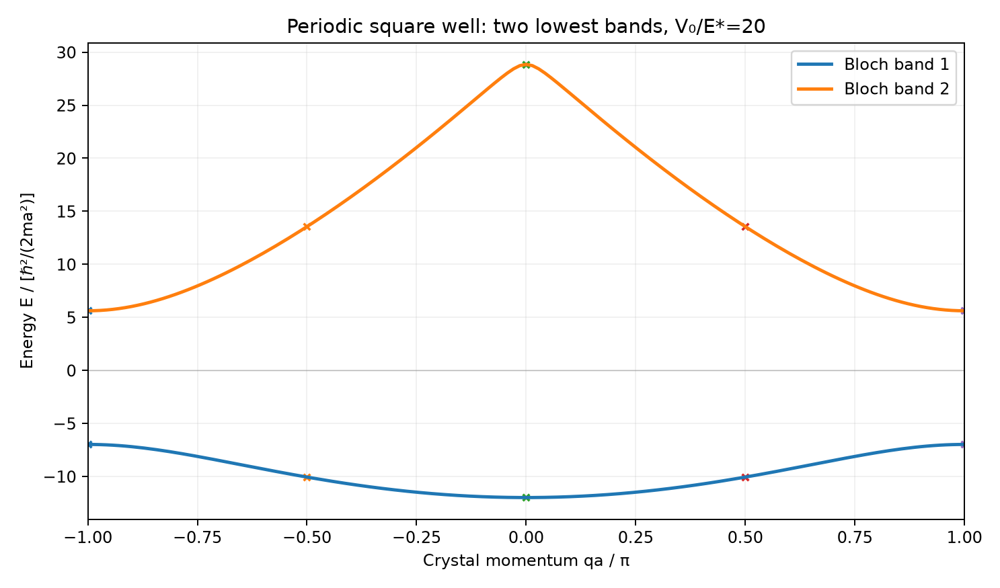
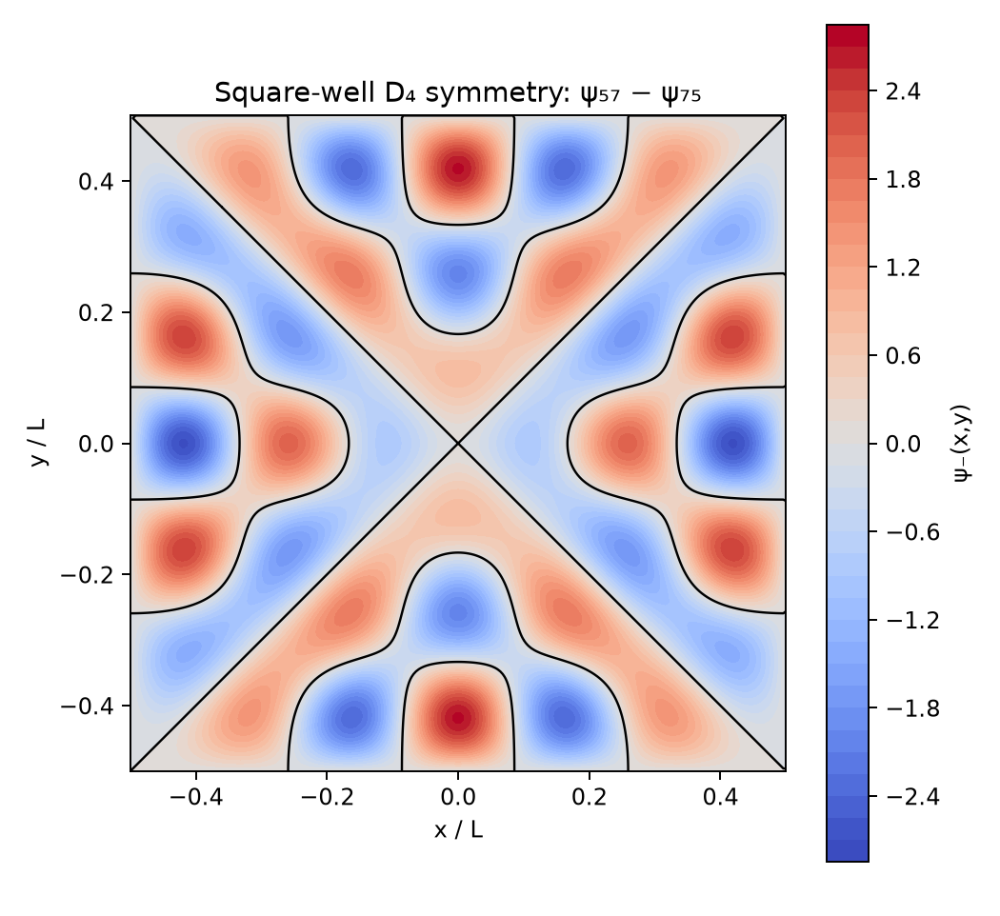
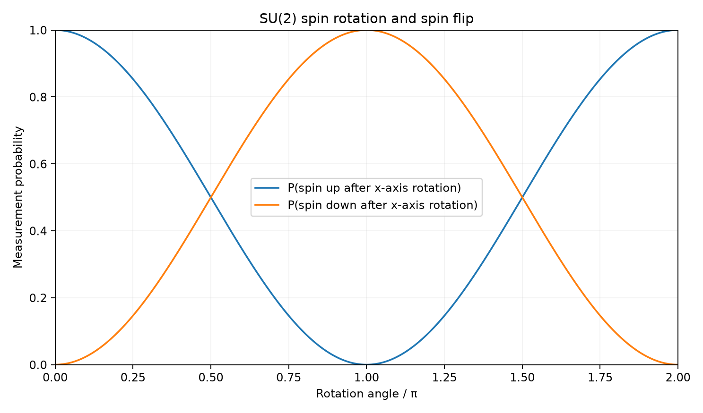

Spatial translations
Momentum as generator, Bloch's theorem and crystal momentum.
\(T(a)=e^{-iap/\hbar}\)
Translations generate momentum. Rotations generate angular momentum. Time evolution is generated by the Hamiltonian. Their conservation laws unify quantum mechanics.
Independent mathematical solutions to Chapter 6 of Introduction to Quantum Mechanics, 3rd edition, by David J. Griffiths & Darrell F. Schroeter.
Chapter 6 identifies the transformations that preserve the Hamiltonian. Their generators explain conserved momentum, angular momentum and energy, as well as degeneracy and selection rules.
Advanced problems derive Bloch bands, Wigner–Eckart relations, oscillator propagators, the hidden hydrogen SO(4) symmetry and Kramers degeneracy under time reversal.
Momentum as generator, Bloch's theorem and crystal momentum.
Even and odd operators, dipole matrix elements and Laporte's rule.
SO(3) representations, tensor operators and the Wigner–Eckart theorem.
Heisenberg equations, exact propagators and Gaussian spreading.
SU(2), square-well dihedral symmetry and hydrogen's Runge–Lenz vector.
Galilean transformations, antiunitary operators and Kramers pairs.
Search by problem number, mathematical concept or operator to find its complete solution group in the LaTeX manuscript.
No matching exercises found.
Each plot is reproduced by the numerical verification script using independently stated parameters. The band spectrum is also checked against exact transfer-matrix matching rather than only finite differences.



Study all 37 numbered exercises: parity identities, generator algebra, Bloch eigenvalue calculations, Wigner–Eckart recursions, propagators, Galilean covariance and Kramers degeneracy.
Unitary symmetry groups; translations and Bloch waves; parity; angular momentum and CG coupling; propagators and time evolution; Runge–Lenz symmetry; antiunitary time reversal.
D. J. Griffiths & D. F. Schroeter, Introduction to Quantum Mechanics, 3rd edition, Cambridge University Press (2018), Chapter 6.
Independent educational coursework companion with paraphrased problem descriptions. Refer to the original textbook for precise problem statements and diagrams. This is not an official solutions manual or a peer-reviewed paper.